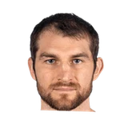

“Talking to kids and being the role models that we’re supposed to be. That’s the next step. We’ve had multiple conversations as a team and it’s helped. We’ve had guys like Tyler Zeller come out and talk like, ‘I can’t speak on you guys’ behalf because I’m Caucasian but I understand what’s going on.’ He has input and we listen. That just all brings us closer together.”

What NBA players and coaches have said about Tyler Zeller
5 quotes about Tyler Zeller from 4 players, coaches and executives, newest first. Each one links to its original source.
Best quotes
Even head coach Brad Stevens who has known Zeller and his family for years after he tried to recruit Tyler's older brother Luke to Butler, is seeing a side of the big man he didn't know existed.
“Probably the thing I've been, maybe the biggest surprise about Tyler Zeller has been the way he passes the ball,”
Marc D'Amico:Brad Stevens on Tyler Zeller not starting in second half:
“We've got a lot of bigs. We're still working through it. That's not on Tyler, that's on me.”
Quotes per season
Who talks about Tyler Zeller most
- Brad Stevens on Tyler Zeller2 quotes
 Danny Ainge1 quote
Danny Ainge1 quote Jae Crowder1 quote
Jae Crowder1 quote Kelly Olynyk1 quote
Kelly Olynyk1 quote
2016-17
2 quotes“Talking to kids and being the role models that we’re supposed to be. That’s the next step. We’ve had multiple conversations as a team and it’s helped. We’ve had guys like Tyler Zeller come out and talk like, ‘I can’t speak on you guys’ behalf because I’m Caucasian but I understand what’s going on.’ He has input and we listen. That just all brings us closer together.”
Brian Robb:Danny Ainge on Jared Sullinger and Tyler Zeller:
“I've talked with both those guys and we'll continue to see how it all plays out.”
2015-16
2 quotesMarc D'Amico:Kelly Olynyk on Tyler Zeller:
“Unbelievable. Unbelievable effort... Every time he gets an opportunity he does what he's supposed to do.”
Marc D'Amico:Brad Stevens on Tyler Zeller not starting in second half:
“We've got a lot of bigs. We're still working through it. That's not on Tyler, that's on me.”
2014-15
1 quoteEven head coach Brad Stevens who has known Zeller and his family for years after he tried to recruit Tyler's older brother Luke to Butler, is seeing a side of the big man he didn't know existed.
“Probably the thing I've been, maybe the biggest surprise about Tyler Zeller has been the way he passes the ball,”